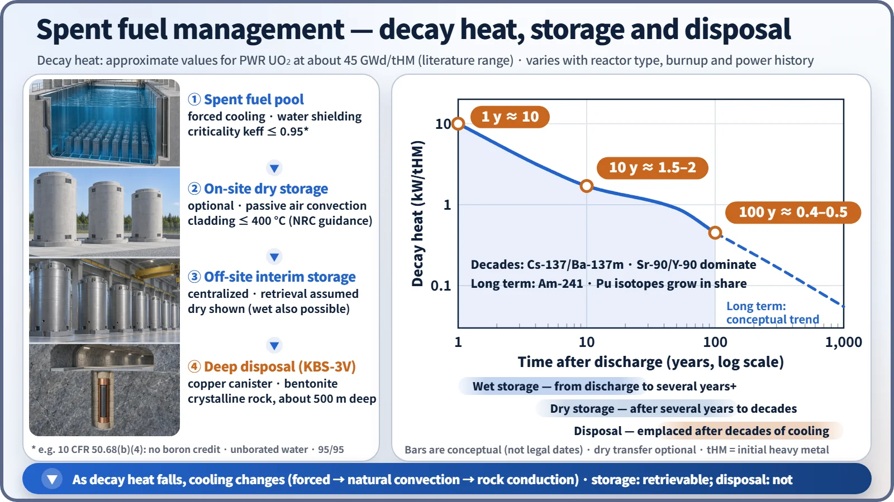
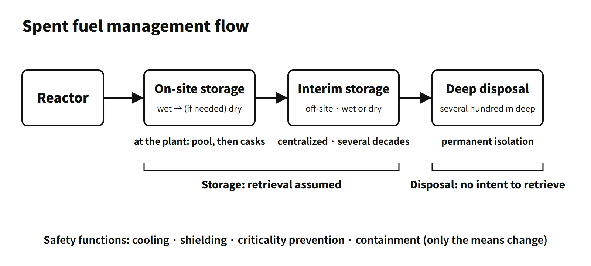

Waste, Fuel Cycle & Decommissioning · C-WD-002
Spent Fuel Storage — Wet and Dry Storage, Interim Storage and Final Disposal
Keeping spent fuel cooled, shielded, subcritical and confined until it can be disposed of: wet pools, dry casks, interim storage and the deep repository.
Spent fuel storage is keeping spent fuel discharged from a reactor for a period of time with the intention of retrieving it. During this period decay heat is removed, shielding and criticality prevention are maintained, and radioactive materials are confined. Final disposal is isolation from the human environment with no intention of retrieval, and is therefore distinct from storage.
Principle and mechanism
What time takes care of — decay heat and radioactivity
The storage method is determined by how decay heat decreases with time. Approximate values for PWR fuel (about 45 GWd/tHM) are:
- about 10 kW/tHM one year after discharge
- about 1.5–2 kW/tHM after 10 years
- about 0.4–0.5 kW/tHM after 100 years
For up to several decades, Cs-137/Ba-137m and Sr-90/Y-90 (half-lives of about 30 years) contribute most; after that, Am-241 and Pu isotopes take a larger share. tHM refers to the initial heavy-metal mass.<!-- Unverified: the kW/tHM values are approximate representative values within the literature range — they depend on reactor type, burnup and enrichment, and have not been checked against an original table -->
Hot fuel just after discharge must be stored wet; once the heat has decreased enough, it is moved to dry storage cooled by natural air convection. The potential radiotoxicity is commonly said to fall to the level of the original natural uranium after several hundred years if only fission products are considered, and after about 100,000 years or more if actinides are included (depending on the basis of comparison). This is why the final step is deep geological disposal.

Composition of spent fuel
The approximate composition of 4 wt% enriched fuel burned for about four years (about 45 GWd/tHM) is as follows.
| Component | Mass fraction (approx.) | Remarks |
|---|---|---|
| Uranium | about 94 % | Residual U-235 about 0.8–1 % |
| Plutonium | about 1–1.2 % | Mostly Pu-239 |
| Fission products | about 4–5 % | 45 GWd/tHM ≈ 4.8 %FIMA |
| Minor actinides | about 0.1 % | Np, Am, Cm |
Since 1 %FIMA ≈ 9.4 GWd/tHM, the fission-product fraction can be checked against the burnup.
Wet storage — the four safety functions of the pool
The functions can be organized as nuclear, thermal-hydraulic and radiological aspects, plus confinement.
- Nuclear safety (criticality prevention): US 10 CFR 50.68(b)(4) requires, without boron credit, keff ≤ 0.95 even if the pool is flooded with unborated water (95/95). If soluble boron credit is taken, keff ≤ 0.95 in borated water and keff < 1.0 in unborated water are required. The means are assembly spacing, neutron-absorber panels, borated water and burnup credit, and misloading accidents are also evaluated.
- Thermal-hydraulic safety (decay heat removal): the pool cooling system (pumps, heat exchangers) limits the water temperature. The time to boiling after loss of cooling and the availability of makeup water are evaluated.
- Radiological safety (shielding): several metres of water above the top of the fuel shield the gamma rays. The US Standard Technical Specifications require a water level of at least about 7 m (23 ft) above the top of the fuel during fuel handling.
- Confinement and water chemistry: the purification system controls water quality, leakage is monitored, and failed fuel is stored in cans.
Expanding storage capacity and high-density racks
There are five ways to expand storage capacity:
- Replacing racks with high-density racks (re-racking)
- Region I/II storage using burnup credit
- Transfer between units
- Conversion to on-site dry storage
- Rod consolidation (demonstration level only)
High-density racks reduce assembly spacing and compensate for the added reactivity with neutron-absorber panels. The absorber needs:
- adequate and uniform B-10 areal density (g/cm²)
- stability under gamma irradiation
- corrosion resistance in borated water
- mechanical integrity and thermal conductivity
- long-term monitorability using surveillance coupons
Boraflex (B₄C in a silicone polymer) has a history of gap formation and boron loss caused by gamma irradiation and silica dissolution (NRC GL 96-04), so Boral (B₄C–Al cermet), Metamic (B₄C–Al composite) and borated stainless steel are now mainly used.
Dry storage and transport casks
Dry storage places cooled fuel in a sealed canister backfilled with helium, inside a concrete or metal overpack, and cools it passively by natural air convection. The key design limits are:
- peak cladding temperature of 400 °C or less in normal storage (NRC NUREG-2215, formerly ISG-11 Rev. 3 — this is not the cask surface temperature)
- double sealing
- shielding to limit the dose at the site boundary
- criticality prevention inside the cask
Types include metal dual-purpose casks (transport and storage), concrete canisters, modular vaults (MACSTOR) and vertical or horizontal concrete overpacks. Pressurized heavy water reactor (CANDU) sites have long used concrete canisters and MACSTOR modules for their natural-uranium fuel bundles.
Transport casks must pass the IAEA SSR-6 Type B(U)F accident-condition tests:
- 9 m drop
- puncture drop onto a steel bar from a height of 1 m
- 800 °C fire for 30 minutes
- immersion under 15 m of water for 8 hours (enhanced 200 m immersion for high-activity contents)
They also undergo normal-transport-condition tests and criticality evaluation. Fuel to be shipped is selected within the cask's licensed limits. The criteria are:
- minimum cooling time
- ranges of initial enrichment and burnup (loading curve)
- decay heat per assembly and total heat load
- neutron and gamma source-term limits
- cladding integrity (failed fuel excluded or canned)
- weight and geometry
What it means in a plant — pool capacity
As reactor pools approach their capacity, operators first re-rack with high-density racks and then move cooled fuel into on-site dry storage. Centralized interim storage relieves the burden on individual plants, but its siting depends on public acceptance, and national programmes set their own timelines for interim storage and disposal.
Final disposal — deep geological disposal and KBS-3
High-level waste is not suitable for near-surface disposal. The standard concept is deep geological disposal, with multiple barriers in stable rock several hundred metres underground. The KBS-3 barrier system of Sweden and Finland is:
- Spent fuel
- Cast-iron insert
- Copper canister (about 5 cm)
- Bentonite buffer
- Backfill
- Crystalline bedrock (about 500 m at Forsmark, Sweden)
Progress abroad:
- Onkalo, Finland: encapsulation trial operation was completed in 2025. In August 2026 STUK issued a positive safety assessment, and the government decision on the operating license is pending.<!-- Unverified: the Onkalo operating license decision (expected autumn 2026) is based on reports from 2026.8 -->
- Forsmark, Sweden: construction began in January 2025.
Reprocessing and pyroprocessing are options to reduce volume and toxicity. Disposal of the high-level residues is still required.
Regulatory and design criteria
The references below are international (IAEA) and US (NRC) examples.
- US NRC: 10 CFR 50.68 (criticality in fuel storage) and 10 CFR Part 72 (independent storage of spent fuel), NUREG-2215 (dry storage review, including the 400 °C cladding limit), Generic Letter 96-04 (Boraflex degradation).
- IAEA: SSG-15 Rev. 1 (2020, storage of spent fuel), SSR-5 (2011, disposal), SSR-6 Rev. 1 (2018, transport, including the Type B(U)F tests).
Easily confused pairs
| Item | Wet storage | Dry storage | Interim storage | Final disposal |
|---|---|---|---|---|
| Location | Plant pool | Plant site | Centralized off-site facility | Rock several hundred m underground |
| Cooling | Forced circulation (active) | Natural air convection (passive) | Wet or dry (Sweden's CLAB is wet) | Conduction through rock |
| Shielding | Water | Concrete, metal | Concrete, metal | Rock, buffer |
| Retrieval | Assumed | Assumed | Assumed | No intention |
| Advantages | Accepts hot fuel, easy monitoring | No power needed, modular expansion | Relieves the burden on plants | Long-term isolation |
| Disadvantages | Risk from loss of cooling, capacity limit | Needs initial cooling, hard to monitor inside | Site acceptance | Siting, long-term demonstration |
Spent fuel is not automatically high-level waste: whether it is treated as waste depends on national policy (direct disposal or reprocessing). Until a decision to dispose of it is made, it is managed as used nuclear fuel.
Key points at a glance
- On-site storage: kept in the plant's wet pool → dry storage facility until delivery to an interim storage or disposal facility.
- Wet: borated-water pool, forced cooling, water shielding, keff ≤ 0.95 (unborated water assumed), high-density racks.
- Dry: sealed canister + He, passive cooling by natural air convection, peak cladding temperature ≤ 400 °C in normal storage.
- Interim storage: centralized off-site storage facility (wet or dry), retrieval assumed, several decades.
- Final disposal: isolation with no intention of retrieval, deep geological disposal (several hundred metres underground), multiple barriers (KBS-3).
- Safety functions: cooling, shielding, criticality prevention, confinement.
- Storage vs disposal: storage assumes retrieval, disposal does not.
- Basis: IAEA SSG-15, SSR-5 and SSR-6; US 10 CFR 50.68, Part 72 and NUREG-2215.
